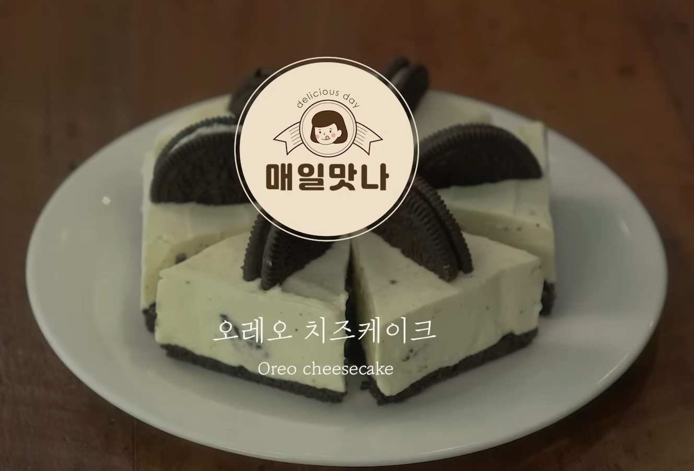

Oreo Cheesecake
Home

Description
This is a no oven oreo cheesecake recipe that I found a while ago on
youtube. If you want the video version, you can watch it on the
매일맛나 delicious day
channel.
Ingredients
- 20 Oreo Cookies
- 200g cream cheese
- 200g whipped cream
- 3 tablespoons of sugar
- 3 tablespoons of melted butter
Steps
- Make 10 cookies into powder
- Add 3 tablespoons of melted butter to the cookie powder and mix
- Add cream cheese, whipped cream, and 5 cookies
- Add 3 spoons of sugar and mix
- Put cooking foil on the prepared square tube
- Add cookie powder and press flat
- Add the mixed cream cheese and make it flat
- Freeze for more than 4 hours into the freezer
- After 4 hours, cut into a good size to eat
- Decorate with 5 cookies